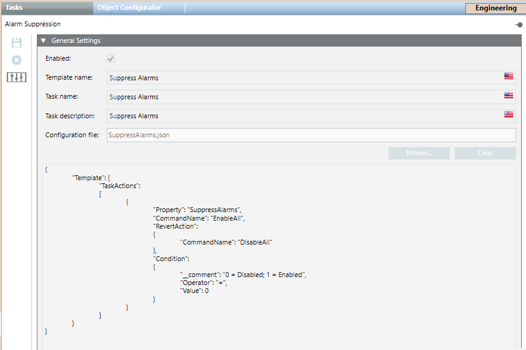
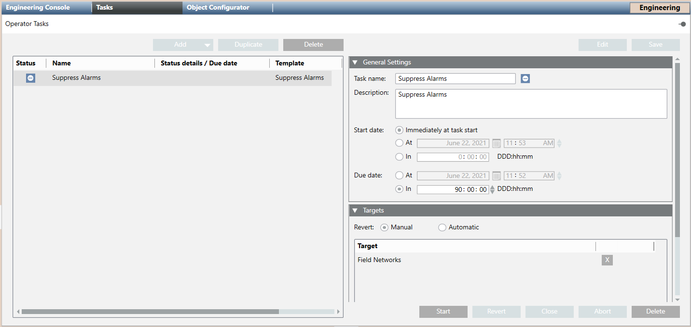

Operator Tasks Integration
This section provides background information relating to the task templates configuration and other configuration aspects.
Tasks Templates Workspace
In Engineering mode, you can create new tasks templates that will be used by operators to create new tasks in Operating mode.
Tasks templates are located in the relevant template folder in Desigo CC libraries.
When you create and then select the template folder, the Tasks tab allows you to create new tasks templates.

In the General Settings expander, you must enter the template name, task name and description, and browse to select the template configuration file (the template’s configuration data displays in the text box below the settings and is read-only).
For instructions, see Configuring Operator Tasks Templates.
Tasks Workspace in Engineering Mode
When you select the Operator Tasks object in Application View of System Browser, the Tasks tab displays. This contains the list of the operator tasks.

Each task occupies one row and comprises the following information:
- Task status and name
- Status details, when the last status change occurred (due date), and for what type of action
- Template name
- Who created the task
By selecting a task in the list, its details displays on the right in the different expanders. in the Targets expander:
- If you hover over the target object, a tooltip displays its full path in System Browser.
- By double-clicking the Task name label for the selected task, the relevant template displays in the Tasks tab.
For operating details, see the relevant reference section.
For operating instructions, see the relevant step-by-step section.
Operator Tasks License
The Operator Tasks extension is covered by license. Check that the required license is available in the system, otherwise operators may not be able to configure and handle operator tasks.
For instructions, see Checking Licenses. In case of license issues:
- If the license is missing or expired and tasks are not being edited, an event is generated to inform the operators about the issue.
- If the license expires, tasks are highlighted in red. Also, tasks in the following statuses after five minutes are automatically forced to
Closed for missing license: 
Deferred-
Checking preconditions 
Executing commands
Running
Running with exception-
Reverting commands -
Waiting for conditions -
Aborting - When license is back, any running tasks remain in
Closed for missing license. Those tasks cannot be restarted. No other action is possible, except duplicating or deleting those tasks. - In Related Items even though the task template is available, when you click it, the Secondary pane opens but the Tasks application is not available.
- If the license is missing or expired and the Operator Task object was not selected in System Browser, when the operator selects it, the Tasks application will not display in the Primary pane, while in the Operation tab, the Status will indicate
Missing license. - If the license is missing or expired and the Operator Task object was selected in System Browser, editing fields become read-only and buttons are disabled.
- If the license expires while a task is being edited:
- A message displays and your changes are lost.
- In the Operation tab, the Status will indicate
Missing license.
Application Rights for Operator Tasks
Operator Tasks rights define the access permission for using the application to create and handle operator tasks.
Even when the license is installed, the availability of the Tasks tab depends on the operator’s user group rights.
If you do not configure appropriate application rights for the operators, they will not have access to this feature at all.
For instructions, see Setting Operator Tasks Application Rights.
Operator Tasks Rights | Application Rights | ||||||
| Show | Configure | Create New Task from Template | Update Any Tasks | Stop Running Task Despite Condition | Delete Task | Allow Automatic Revert |
| ✔ | ✘ | ✘ | ✘ | ✘ | ✘ | ✘ |
| ✔ | ✔ | ✘ | ✘ | ✘ | ✘ | ✘ |
| ✔ | ✔ | ✔ | ✘ | ✘ | ✘ | ✘ |
| ✔ | ✔ | ✘ | ✔ | ✘ | ✘ | ✘ |
| ✔ | ✔ | ✘ | ✘ | ✔ | ✘ | ✘ |
| ✔ | ✔ | ✘ | ✘ | ✘ | ✔ | ✘ |
| ✔ | ✔ | ✘ | ✘ | ✘ | ✘ | ✔ |
NOTE: Library rights define the access permission for using the Tasks tab to create the template folders and configure the tasks templates. (In Application Rights, see Library.)
Validation for Operator Tasks
If you set the validation profile for the Operator Tasks object or one of the target tasks is subject to validation, operators will be prompted to validate the following actions: editing, starting, closing, cancelling, or deleting tasks, as well as, doing revert actions.
Distribution for Operator Tasks
Each system can see only the local templates that is, those ones configured in the local libraries.
For a task you can link target objects that belong to anyone of the systems of a distributed configuration.